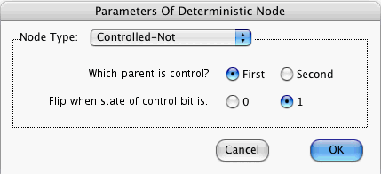

When you press the OK button in this window, the computer checks that
If these conditions are satisfied, the above window closes. Furthermore, the states and amplitudes stored in memory for the focus node are changed. If the conditions are not satisfied, the above window remains open, the states and amplitudes are not changed, and a warning message appears on the screen.
Consider, for example, what will happen if the above window is closed with the above settings:
Suppose M1, M2, N1, N2 are elements of {0,1}. The Parent Nodes table of the Node Prior-Info window will display the two parent nodes in a certain order. Say M1 is the state of the first parent P1, and M2 is the state of the second parent P2. Define (N1, N2) in terms of M1 and M2 as follows.
| M1 | M2 | (N1,N2) |
| 0 | 0 | (0,0) |
| 0 | 1 | (0,1) |
| 1 | 0 | (1,1) |
| 1 | 1 | (1,0) |
This table may be described by saying that
Quantum Fog gives names N1N2 (i.e., 00, 01, 10 and 11) to the states of the Controlled-Not. When the states M1 and M2 are given by a particular row of the above table, Quantum Fog assigns unit amplitude to the state N1N2 shown in that row, and it assigns zero amplitude to all the other states.
More information about Controlled-Nots can be found in the document entitled "Quantum Fog Library Of Essays" that accompanies this manual.